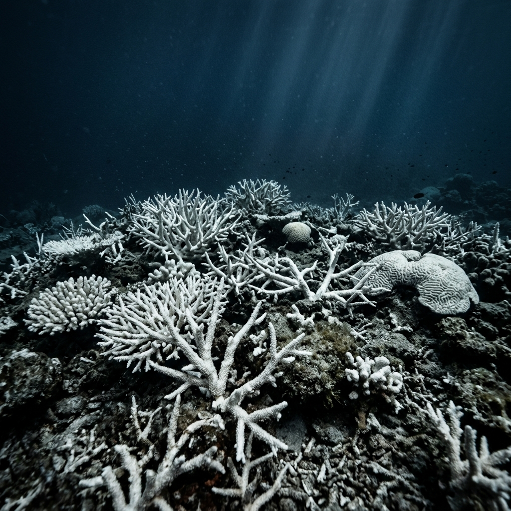
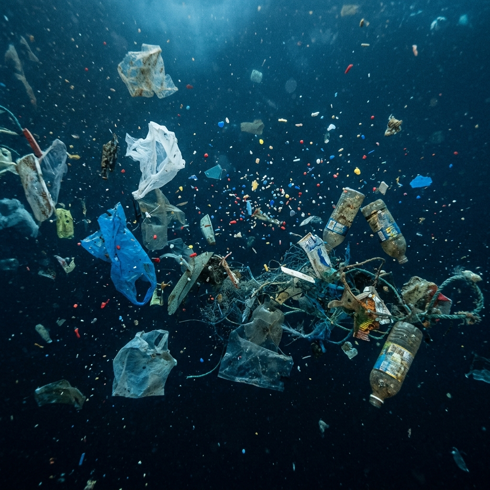
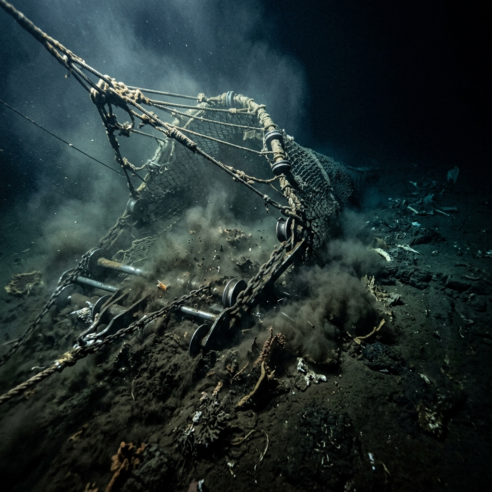

這不是一次普通的潛航，而是一場見證。
《深海迴聲 Echoes of the Deep》誕生於對深海未知的敬畏，以及對生態現狀的焦慮。我們響應 聯合國永續發展目標 (SDG 14：水下生命)，希望透過沉浸式的視覺體驗與聽覺回饋，打破傳統生硬的保育宣導，讓使用者在親身「潛入深海」的過程中，直觀地感受到人類活動對各個海洋深度層所造成的衝擊。
這趟潛航也許無法讓你親眼目睹所有的災難，但那些在真實海洋中上演的生態悲劇——失去色彩的珊瑚、無所不在的塑膠微粒、以及將海床連根拔起的底拖網——都在無聲地向人類發出求救訊號。
為了讓你不再只是個旁觀者，本專案結合了視差滾動技術、動態音效引擎與UI設計，旨在建立一個能真正引起共鳴的數位海洋知識庫。
在深海的每個層級中，都有著急需被關注的生態危機。以下是我們在專案中探討的三大核心議題：


